The month that triathlon took over my life
Jan 2024
I trained for two weeks, did a sprint triathlon, trained another two weeks, and did double the distance (an Olympic).
The morning of Sunday, September 3rd, 2023, was a busy one for Yale’s campus — the extracurricular bazaar was upon us. A poster-filled chaotic throng where you squeeze past hundreds of tables and struggle to hear what random club someone is pitching you.
I took a speedy break from running the Entrepreneurial Society booth to go and meet the captain of the Yale Triathlon Club. Seeing as in April, I’d completed a half-marathon, an Olympic triathlon was the new seemingly-unrealistic-but-maybe-there’s-a-tiny-chance-I-could-do-it challenge I had set my sights on for the semester.
So I weave my way to the stand, start talking to the only guy there, Jack, and immediately ask him what my options are for when to race. He basically said: before October. Aka IN LESS THAN A MONTH.
I started to panic a little. I hadn’t realized that if I was going to do a triathlon this semester, it would have to be ASAP because the water gets too cold. Duh.
As soon as I got home, I dove into hours of research and overthinking and trying to figure out if I’d be able to race — there was a sprint triathlon in Buzzard’s Bay, Westport, MA on September 17th (.3mi swim, 13mi bike, 3mi run)… was that too ridiculous of a goal?
What ensued were two weeks of utterly all-consuming, extremely intense training, racing, realizing I loved it, and then doing it all over again.
Week 1:
A lot of this “training” was learning the basics. And by basics, I mean, very basic.
The week immediately after the Bazaar I was still trying to gauge whether or not I thought I could actually do this. To start, I figured I’d try some “brick” workouts as triathletes called them, which consist of a bike AND THEN a run immediately after. This helps you get used to the feeling of running after you’ve been biking, which you have to train, because your legs feel like bricks.
Below are some direct quotes from my journal during this week.
Tue, Sept 5th: “biked for 60mins, ran for a mile. I am a beast.”
Wed Sept 6th: “biked 20mins, ran 5k. BEAST I TELL YOU.”
Thu Sept 7th: “went to the gym early morning but was too tired to do anything so went back to sleep.”
Fri Sept 8th: “I am SO EXHAUSTED. tri training is making me so tired all the time, it’s actually crazy”
I quickly realized there was a reason people consider triathletes intense.
Week 2: learning how to swim & use the bike
After a few days of hyping myself up regarding the bike and run, it was time for me to ~test the waters~ and see if swimming was actually as big of a deal as people make it out to be. Spoiler: it was.
Sun Sept 10th: “was at the pool at 10am. OMG swimming is SO HARD. OOF. might have to do breastroke if I do the tri…”
I literally made it 100m (one full length of the pool) and had to take a pause. I was feeling muscles in my arms I didn’t know I had. I didn’t know how to regulate my breathing. It felt so bad literally freaked out and thought I’d have to do breaststroke, IF I even felt good enough to do the race at all.
On Monday, I went and picked up a bike (and helmet) from Coach Clay, absolute angel of a man that runs Yale Triathlon. It’s a Cannondale, a true beauty. He told me that I could use it as long as I was a student, and that the previous owner was a grad student that would do super long bike races and had a military background. Big shoes to fill.
He even drove me back to campus because he didn’t want me biking (like an idiot, I had brought a bag, which I didn’t realize would be a safety hazard to carry while on a bike). This was the first of many ways in which I am eternally indebted to Coach Clay and all his help along my triathlon journey.
On Tuesday, I took the bike out for a spin in the morning and we BONDED. I was just getting used to how it feels, but couldn’t really figure out how to switch gears without the chain falling off.
I also went to Tri Team swim practice in the evening, where Coach Clay watched my freestyle. He told me I was a strong swimmer and that I shouldn’t bother with breastroke, which got me super hyped up, and lead to me officially buying the ticket for the race on Wednesday.
Thursday, Friday and Saturday was just more of me trying to get used to three sports at once, not sleeping enough, feeling exhausted, and freaking out.
I also was scrambling to figure out the logistics. I’d have to take a train, and then maybe borrow my friend’s car, but then there was nowhere to stay that close to the race…
AND not to mention this was the weekend there was a HURRICANE and it wasn’t even certain that the race would happen… Needless to say:
Sat Sept 16th: “so frickin nervous I might cry.”
The Sprint
On race day, (I’m so glad it actually ended up happening), the most I could stomach in the morning was a banana. I had my sister with me for emotional support and photographic evidence, which I was SOOO grateful for. She had a whole list of homework that she was going to do while I was off racing and ended up doing none of it.
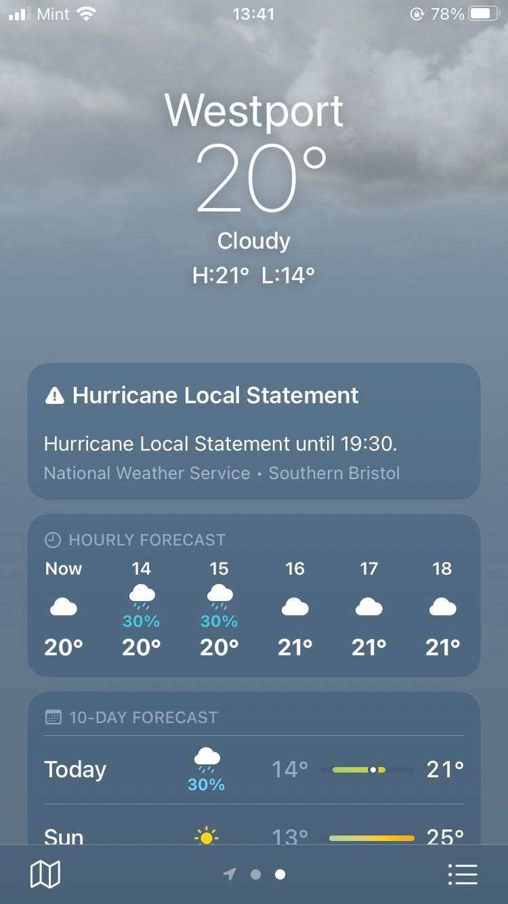
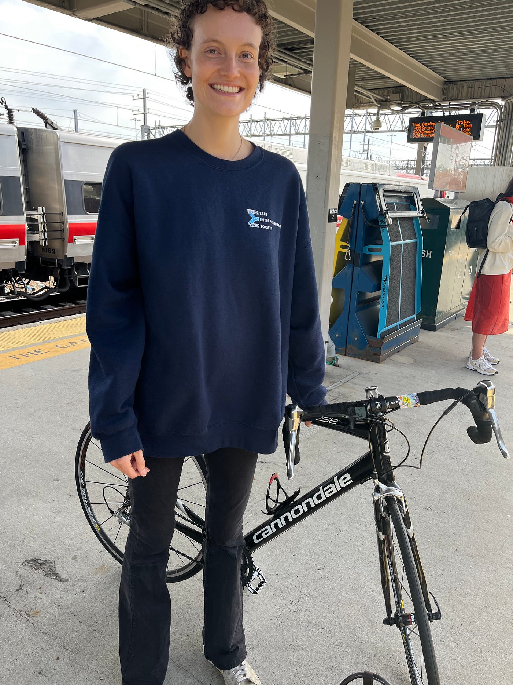
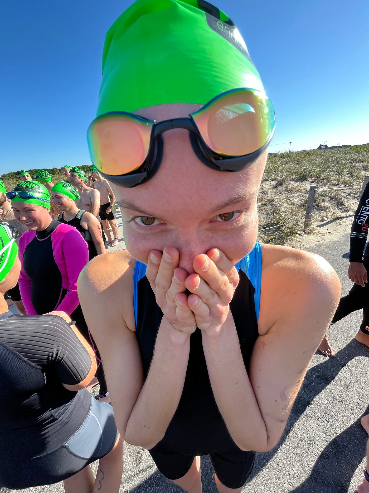
I had no idea I needed a “running belt” — something that you can attach your bib number to, unless you want to pin it to a t-shirt that you throw on after the bike. I had a mini-meltdown but luckily someone racking their bike next to me had an extra and let me use it!! This one of the many ways I’ve experienced the unique sense of camaraderie and mutual support in the triathlon community.
We lined up for the swim. My sister was standing with me until the very end. Music was pumping, I was so excited / scared / nervous / full of adrenaline that I almost took off into the water before I was allowed to.
The swim was less of a swim and more of a “survive the ocean waves, don’t drown, and before you know it it’s over”. The current was SO strong, it pulled me along and I finished in under 7 minutes, which is a ridiculous pace for 750m and 100% not based on my own merit lol (even though I did swim freestyle the entire time! no breaststroke needed).
If anything, it was a warm up and got me hyped for the bike. During this entire leg I was mostly focused on not falling off or crashing into someone: I didn’t really know how to use the bike yet so I never changed gears or even drank water because I was scared to loose my balance if I was just holding it with one hand. I finished in 47mins.
Then, the run. Wow. The beginning felt like I was walking, not running. I thought I was going soooo slow. It was a 5k, which they marked every mile, and I remember thinking at one point “huh, I feel like I’ve been going for a while, I’m probably about to hit mile 3”… and then I saw the 2 mile mark. That last mile was tough, and near the finish I got passed by a 75 year old woman, which caused me to speed up and practically sprint the last couple hundred meters.
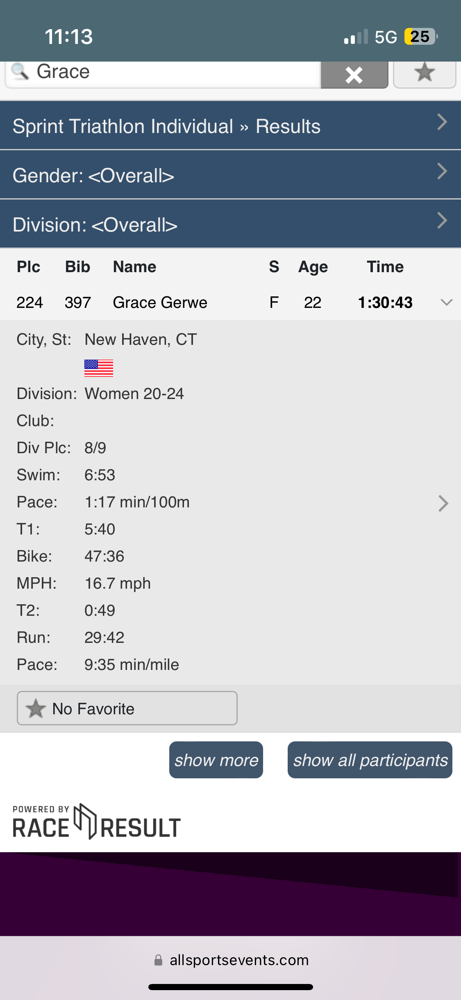
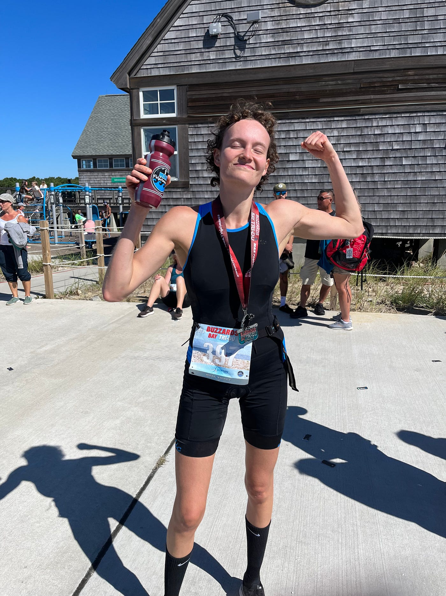
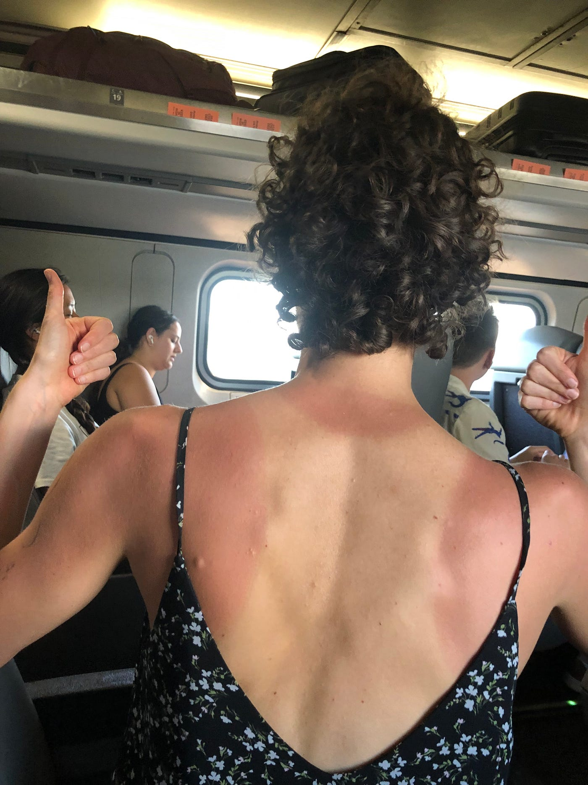
When I finished, I was so proud. I couldn’t believe I did that. For five minutes I stood around next to my sister in total shock, and then… I felt fine. I actually felt fine. I thought I’d be exhausted, and figured I still had too much adrenaline for the fatigue to hit me yet.
The Aftermath
Getting back to Yale was a total hassle. Traveling with a bike, and from inconvenient locations in the middle of nowhere makes things very difficult. But we made it and I ended up going directly from the New Haven train station to a barbecue with the Yale Triathlon Team :)
What was totally crazy to me was how I felt in the 24h post-sprint:
Sun Sept 17th: I AM ADDICTED. Have felt a HUGE amount of adrenaline ALL DAY. Like taking 10 shots of coffee or doing 10 polar plunges. INCREDIBLE.
Which made me wonder… if I feel this good after a sprint… what would an Olympic be like?
Another Two Weeks: Double the Distance
The second half of September 2023 was all about prepping for the NYC Olympic on October 1st. I knew I had to 1) actually test out and see if I could do each of the distances on their own, 2) get more comfortable on the bike, and 3) start thinking about race nutrition.
1) getting used to the distances
This just meant me gradually increasing the lengths of each training. I didn’t follow a rigid plan, but was flexible and went along with what I felt my body could do.
I’m unbelievably lucky that it’s literally impossible for me to live closer to Yale’s pool, biggest gym and trail that goes straight for miles and is great for running & biking, even though I generally prefer to train indoors (control freak).
Swimming started to develop into my favorite of the three (wild, right?!). I found that once I knew how to breathe, and trusted my arms, didn’t overdo it, then I just got into a groove.
Running was definitely the hardest. Multiple times I would fall short of my goals for a workout just because of pure exhaustion. My knees also started to “tweak” a bit, and when that happened I eased off.
2) becoming more comfortable on the bike
Yeah. At this point, it was like we’d been on two or three dates, but I didn’t know them well enough yet to stop caring about how fast they texted me back. Primarily because I had actually only ridden it two or three times. I needed this relationship to be SOLID.
One morning, I took the bike out to try and get used to switching the gears. It was ROUGH. The chain kept falling off, I had to keep stopping and putting it back on, and by the end of it my fingers were covered in black bike grease (which took forever to get off) and I was on the verge of tears.
The NYC course is hillier than Buzzards Bay so I knew I couldn’t get away with not switching gears throughout, so I just kept trying until I got the hang of it.
3) thinking about race nutrition
This came as a surprise to me. I didn’t realize that after about 90mins, you use up all your glycogen stores and if you aren’t consuming calories, you will literally start to malfunction.
Figuring out what I was going to eat and drink during the race took a lot of testing and failing. I really didn’t want to rely on energy gels (which almost everyone uses), so I after trying out different bars I figured I could use “That’s It” bars, which are just pure fruit - because what you need is easily digestible carbs. However, they do have a high fiber content. Not the best for bowel movement.
I also tested a few electrolyte powders and decided on LMNT because it had the most sodium and tasted amazing.
Then I had to think about how I was going to carry all this stuff with me during the race. I had no idea such a thing as bike jerseys existed, so I ended up wearing a fanny pack during the bike. I probably looked like an idiot (lol) but it was all I had.
The Olympic
I seem to not have good luck with weather… this weekend, NYC was FLOODED. The Thursday and Friday before the race, storms were out of control and it was again unsure if the race would even happen. When we got there on Saturday (my sister came again, thank the heavens) it was sunny, but… around 3pm, less than 24h before the race, they cancelled the swim. I was so upset I almost cried. It was going to be: run 1mi, bike 25mi, run 6.2mi.
The morning of — again, adrenaline was pumping so strong I couldn’t stop myself from jumping.
The first run was a warm up; the bike felt way longer than I had anticipated. During races, you’re not allowed to have headphones in for safety reasons, so there’s no music, only you and your thoughts. I forgot to eat and drink until around mile 20, when I realized that and crammed two bars and a bottle of LMNT mixed with water.
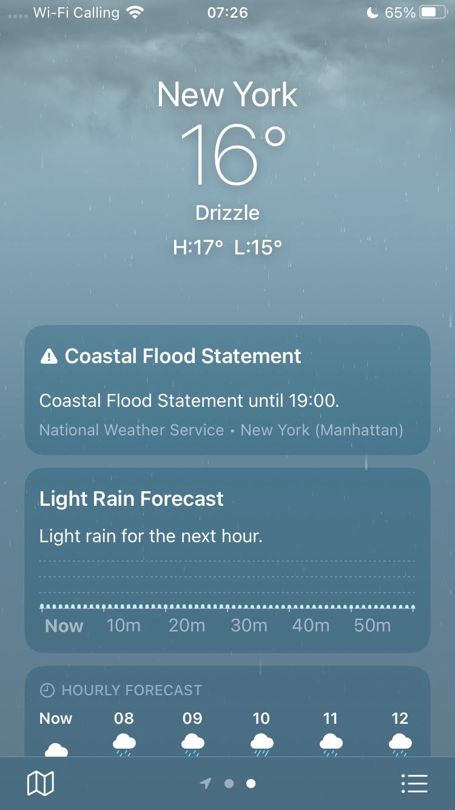
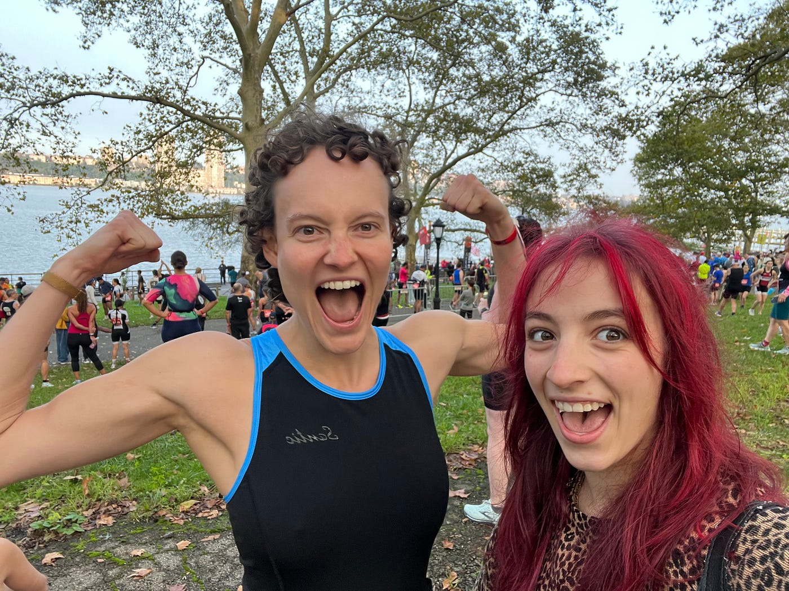
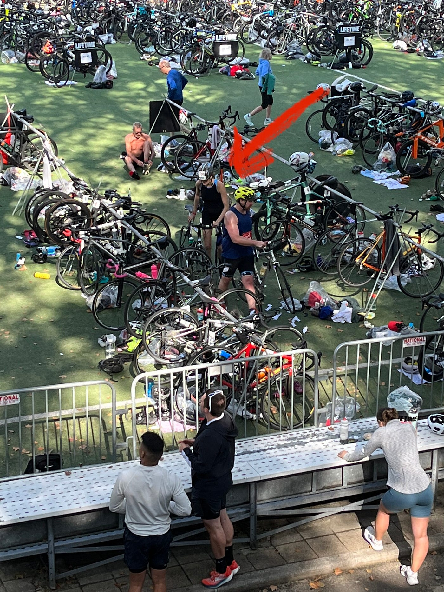
Transitioning from the bike to the run was tough, especially because the first mile was up a massive hill. Mile 2 felt okay, but mile 3 was… SO. FRICKIN. BRUTAL. The hardest part of the race. Because at that point, I was in so much pain, but I still had 3.2 miles to go…
Mile 4 could not come fast enough. But once it did, all I was thinking was: “just make it to mile 5. Just make it to mile 5, and you’re basically done.”
But somewhere around 4.5mi, I remember feeling the biggest runners high I had ever experienced. EVER. Since I’d started running in February. It was UNREAL. There was a sense of elevation, a euphoria, that was on a completely other level.
I finished. And I was hooked.
Sun Oct 1st: I am indestructible. I have never felt so high in my life. I wasn’t running — I was flying. I cried at the end. I am so proud of myself.
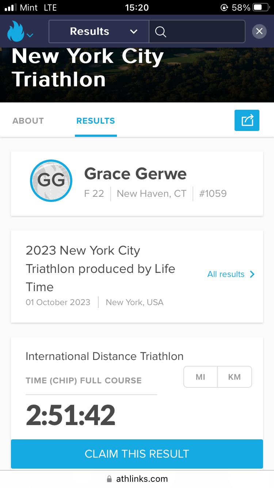
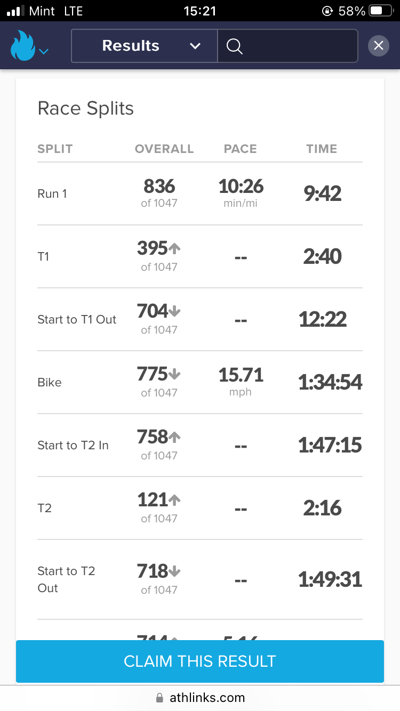
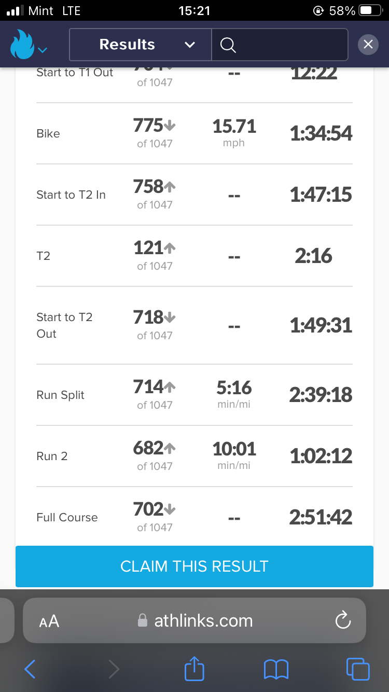